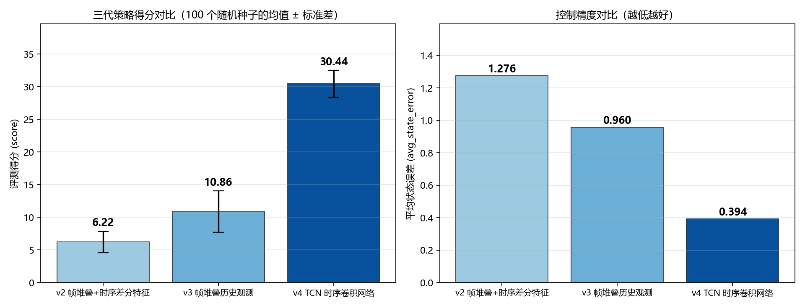
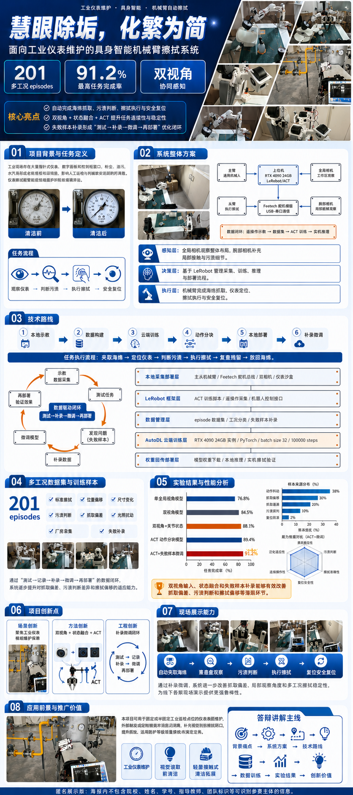

三个主线项目 —— 算法深度、方向热度、以及"能不能落到硬件上"。


用 LeRobot + ACT 做双相机端到端模仿学习，让六自由度机械臂学会 "抓海绵 → 定位仪表 → 判断污渍 → 擦拭 → 复位"。 本地示教 → AutoDL 云端训练 → 实机部署 → 失败样本回溯微调，形成完整闭环。
2023 年 E 题用 K230 + 舵机云台做运动目标追踪（LAB 阈值分割 + Blob 检测，三功能按键状态机）；2025 年 E 题用 TI MSPM0G3507 做自行瞄准装置 （8 路光电阵列 PID 循迹 + K230 视觉瞄准），获新疆赛区二等奖。
其他仓库
math-modeling-portfolio ·
四次建模竞赛（MILP / GA+PSO / MDP / 分布鲁棒优化 / XGBoost / KNN / 生存分析 / Transformer-LSTM）
quadrotor-fosm-ipso ·
四旋翼分数阶滑模轨迹跟踪 + 改进 PSO（EI 论文一）
fuzzy-pid-ipso-temperature-control ·
模糊 PID 温度控制 + Levy 飞行改进 PSO（EI 论文二）
k230-edge-vision-demo ·
K230 边缘视觉伺服工具箱（46 个离线可跑的测试）
embedded-lab-collection ·
51 单片机 / 蓝桥杯 / 8051 汇编 / STM32 练习
p2p-file-sync ·
局域网 P2P 文件同步（UDP 发现 + TCP 传输 + SHA-256 校验 + 断点续传）
按时间倒序。
按"能不能拿出证据"来分类。
欢迎交流具身智能、强化学习或嵌入式视觉相关的问题。
邮箱：ffgxfvy5562@163.com
GitHub：github.com/ffgxfvy
简历：PDF 下载